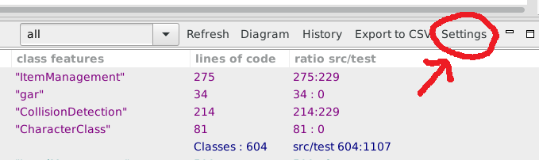
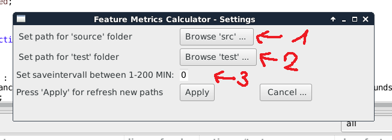

Settings
By Clicking on the "Settings" Button on the top right in the FMC View

another View which contains the possible Settings opens.
1. User can change the default SRC Folder
2. User can change the default TEST Folder
3. User can change the default interval to export the metrics
